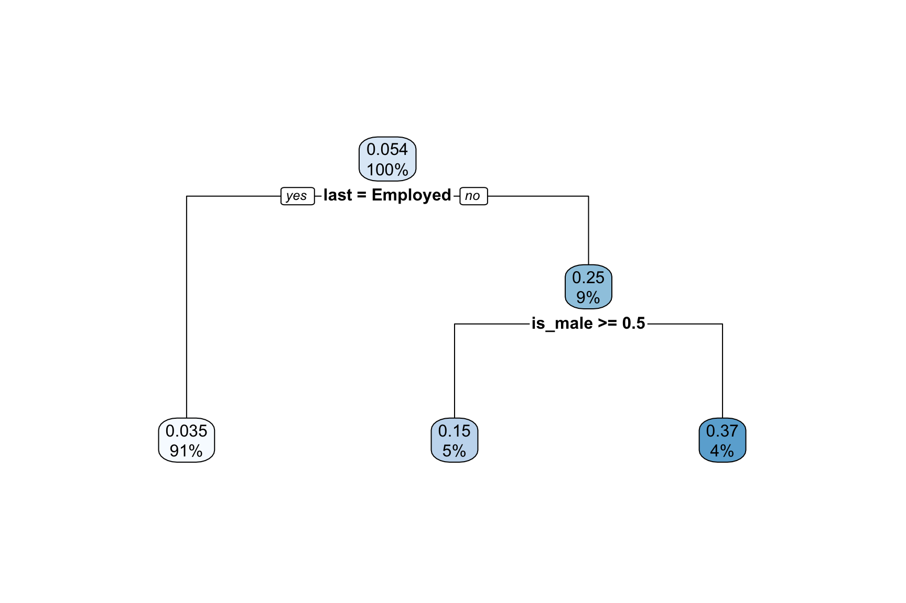

Code
library(tidyverse)
library(haven)
library(here)
devtools::load_all(here('R'))The aim of this notebook is to understand how straightforward and informative applying standard CART approaches to the UKHLS data, with a focus on understanding and presenting which factors are associated with different economic (in)activity statuses in particular waves.
library(tidyverse)
library(haven)
library(here)
devtools::load_all(here('R'))base_dir_location <- "big_data/UKDA-6614-stata/stata/stata13_se/ukhls"Individual level responses
indresp_files <- dir(here(base_dir_location), pattern = "[a-z]_indresp.dta", full.names = TRUE)household level responses
hhresp_files <- dir(here(base_dir_location), pattern = "[a-z]_hhresp.dta", full.names = TRUE)Now to define the varnames of interest in the indresp files, along with which their variable type.
varnames <- c(
"jbstat", "dvage", "sex", "hiqual_dv", "hhtype_dv",
"ethn_dv", # ethnicity
"jbsat", #job satisfaction
"wkaut1", # autonomy measures
"wkaut2",
"wkaut3",
"wkaut4",
"wkaut5",
"jbsec", # job security
"scghq1_dv", # ghq sum of Likert scale items (?) (0-36)
"scghq2_dv", # ghq caseness (0-12)
"sf12mcs_dv", # SF-12 Mental Component Summary - (0-100)
"sf12pcs_dv" #SF-12 physical component summary - (0-100)
)
extract_what <- c(
"labels", "values",
"labels", "labels", "labels",
"labels", "values",
"values", "values", "values", "values", "values",
"values",
"values", "values", "values", "values"
)overall_start_time = Sys.time()
long_slimmed_datalist <- lapply(indresp_files,
read_and_slim_data,
varnames = varnames,
extract_what = extract_what,
verbose = TRUE
)[1] "extracting file: /Users/JonMinton/repos/economic_inactivity/big_data/UKDA-6614-stata/stata/stata13_se/ukhls/a_indresp.dta"
[1] "Attempting to find 17 variables"
[1] "WARNING! Only 11 of the 17 requested have been found"
[1] "read file in 0.321978092193604 seconds"
[1] "slimming file..."
[1] "extracted 11 variables in 0.409070014953613 seconds"
[1] "extracting file: /Users/JonMinton/repos/economic_inactivity/big_data/UKDA-6614-stata/stata/stata13_se/ukhls/b_indresp.dta"
[1] "Attempting to find 17 variables"
[1] "All variables requested found"
[1] "read file in 0.446846961975098 seconds"
[1] "slimming file..."
[1] "extracted 17 variables in 0.805332899093628 seconds"
[1] "extracting file: /Users/JonMinton/repos/economic_inactivity/big_data/UKDA-6614-stata/stata/stata13_se/ukhls/c_indresp.dta"
[1] "Attempting to find 17 variables"
[1] "WARNING! Only 11 of the 17 requested have been found"
[1] "read file in 0.652706146240234 seconds"
[1] "slimming file..."
[1] "extracted 11 variables in 0.375649929046631 seconds"
[1] "extracting file: /Users/JonMinton/repos/economic_inactivity/big_data/UKDA-6614-stata/stata/stata13_se/ukhls/d_indresp.dta"
[1] "Attempting to find 17 variables"
[1] "All variables requested found"
[1] "read file in 0.476711988449097 seconds"
[1] "slimming file..."
[1] "extracted 17 variables in 0.648522138595581 seconds"
[1] "extracting file: /Users/JonMinton/repos/economic_inactivity/big_data/UKDA-6614-stata/stata/stata13_se/ukhls/e_indresp.dta"
[1] "Attempting to find 17 variables"
[1] "WARNING! Only 11 of the 17 requested have been found"
[1] "read file in 0.507139921188354 seconds"
[1] "slimming file..."
[1] "extracted 11 variables in 0.419037103652954 seconds"
[1] "extracting file: /Users/JonMinton/repos/economic_inactivity/big_data/UKDA-6614-stata/stata/stata13_se/ukhls/f_indresp.dta"
[1] "Attempting to find 17 variables"
[1] "All variables requested found"
[1] "read file in 0.460434198379517 seconds"
[1] "slimming file..."
[1] "extracted 17 variables in 0.603795051574707 seconds"
[1] "extracting file: /Users/JonMinton/repos/economic_inactivity/big_data/UKDA-6614-stata/stata/stata13_se/ukhls/g_indresp.dta"
[1] "Attempting to find 17 variables"
[1] "WARNING! Only 11 of the 17 requested have been found"
[1] "read file in 0.522423982620239 seconds"
[1] "slimming file..."
[1] "extracted 11 variables in 0.390570163726807 seconds"
[1] "extracting file: /Users/JonMinton/repos/economic_inactivity/big_data/UKDA-6614-stata/stata/stata13_se/ukhls/h_indresp.dta"
[1] "Attempting to find 17 variables"
[1] "All variables requested found"
[1] "read file in 0.417834997177124 seconds"
[1] "slimming file..."
[1] "extracted 17 variables in 0.500400066375732 seconds"
[1] "extracting file: /Users/JonMinton/repos/economic_inactivity/big_data/UKDA-6614-stata/stata/stata13_se/ukhls/i_indresp.dta"
[1] "Attempting to find 17 variables"
[1] "WARNING! Only 11 of the 17 requested have been found"
[1] "read file in 0.494662046432495 seconds"
[1] "slimming file..."
[1] "extracted 11 variables in 0.356796979904175 seconds"
[1] "extracting file: /Users/JonMinton/repos/economic_inactivity/big_data/UKDA-6614-stata/stata/stata13_se/ukhls/j_indresp.dta"
[1] "Attempting to find 17 variables"
[1] "All variables requested found"
[1] "read file in 0.398204803466797 seconds"
[1] "slimming file..."
[1] "extracted 17 variables in 0.451305150985718 seconds"
[1] "extracting file: /Users/JonMinton/repos/economic_inactivity/big_data/UKDA-6614-stata/stata/stata13_se/ukhls/k_indresp.dta"
[1] "Attempting to find 17 variables"
[1] "WARNING! Only 11 of the 17 requested have been found"
[1] "read file in 0.473535060882568 seconds"
[1] "slimming file..."
[1] "extracted 11 variables in 0.338895082473755 seconds"
[1] "extracting file: /Users/JonMinton/repos/economic_inactivity/big_data/UKDA-6614-stata/stata/stata13_se/ukhls/l_indresp.dta"
[1] "Attempting to find 17 variables"
[1] "All variables requested found"
[1] "read file in 0.373781204223633 seconds"
[1] "slimming file..."
[1] "extracted 17 variables in 0.397103071212769 seconds"long_slimmed_data <- bind_rows(long_slimmed_datalist)
overall_end_time = Sys.time()
print(paste(
"Overall process took",
difftime(overall_end_time, overall_start_time, units = "mins"),
"minutes"
))[1] "Overall process took 0.192879450321198 minutes"rm(long_slimmed_datalist)
long_slimmed_data# A tibble: 7,058,281 × 4
pidp wave variable value
<dbl> <chr> <chr> <chr>
1 68001367 a sex male
2 68004087 a sex male
3 68006127 a sex female
4 68006135 a sex female
5 68006807 a sex female
6 68007487 a sex female
7 68007491 a sex male
8 68007495 a sex male
9 68007499 a sex male
10 68008167 a sex female
# ℹ 7,058,271 more rowsDidn’t I do something similar with household level variables (i.e. build an extractor?)
Yes. It’s in two parts…
pid_hid_links <-
lapply(indresp_files, extract_pid_with_hid_and_wave) %>%
bind_rows()
eq_incomes_nkids <-
lapply(hhresp_files, extract_eq_income_and_num_dependents) %>%
bind_rows()
eq_incomes_nkids_linked <-
pid_hid_links %>%
left_join(
eq_incomes_nkids, by = c("hidp", 'wave')
)
rm(pid_hid_links, eq_incomes_nkids)econ_act_groups <- readxl::read_excel(path = here("data/economic_activities_categories.xlsx"), sheet = 'categories') %>%
janitor::clean_names()long_slimmed_data <-
long_slimmed_data %>%
left_join(
econ_act_groups %>% select(original, recoded = level_2_meso),
by = c('value' = 'original')
) %>%
mutate(
value = ifelse(!is.na(recoded), recoded, value)
) %>%
select(-recoded) %>%
mutate(
highqual = case_when(
value %in% c("A level etc", "A-level etc") ~ "A-level etc",
value %in% c("No qual", "No qualification") ~ "No qualification",
value %in% c("Other higher", "Other higher degree") ~ "Other higher degree",
value %in% c("Other qual", "Other qualification") ~ "Other qualification",
value == "Degree" ~ "Degree",
value == "GCSE etc" ~ "GCSE etc",
value %in% c("inapplicable", "missing") ~ "Inapplicable or missing",
TRUE ~ NA_character_
)
) %>%
mutate(
# Now going to make this three levels only
simplified_highest_qualification = case_when(
highqual == "No qualification" ~ "No qualification",
highqual %in% c("GCSE etc", "Other qualification", "A-level etc") ~ "Intermediate qualifications",
highqual %in% c("Degree", "Other higher degree") ~ "Degree or above",
TRUE ~ NA_character_
)
) %>%
mutate(
value = ifelse(!is.na(simplified_highest_qualification), simplified_highest_qualification, value)
) %>%
select(-highqual, -simplified_highest_qualification)
long_slimmed_data# A tibble: 7,058,281 × 4
pidp wave variable value
<dbl> <chr> <chr> <chr>
1 68001367 a sex male
2 68004087 a sex male
3 68006127 a sex female
4 68006135 a sex female
5 68006807 a sex female
6 68007487 a sex female
7 68007491 a sex male
8 68007495 a sex male
9 68007499 a sex male
10 68008167 a sex female
# ℹ 7,058,271 more rowsextract_three_periods <- function(data, waves){
data %>%
filter(wave %in% waves) %>%
filter(!(variable %in% c('dvage', 'sex', 'hiqual_dv', 'hhtype_dv', 'fihhmnnet3_dv', 'ethn_dv', 'jbsat', 'jbsec', 'wkaut1', 'wkaut2', 'wkaut3', 'wkaut4', 'wkaut5'))) %>%
left_join(
data %>%
filter(variable == "dvage") %>%
filter(wave == waves[1]) %>%
mutate(age_at_start = as.double(value)) %>%
select(pidp, age_at_start)
) %>%
left_join(
data %>%
filter(variable == 'sex') %>%
filter(wave == waves[1]) %>%
mutate(sex = value) %>%
select(pidp, sex)
) %>%
left_join(
data %>%
filter(variable == 'hiqual_dv') %>%
filter(wave == waves[1]) %>%
mutate(highest_qualification = value) %>%
select(pidp, highest_qualification)
) %>%
left_join(
data %>%
filter(variable == "hhtype_dv") %>%
filter(wave == waves[1]) %>%
mutate(hh_type = value) %>%
select(pidp, hh_type)
) %>%
filter(variable == 'jbstat') %>%
select(-variable) %>%
mutate(
period = case_when(
wave == waves[1] ~ 'previous',
wave == waves[2] ~ 'last',
wave == waves[3] ~ 'current'
)
) %>%
select(-wave) %>%
pivot_wider(names_from = period, values_from = value)
}
data_2009to2011 <- extract_three_periods(long_slimmed_data, c("a", "b", "c")) %>%
filter(between(age_at_start, 16, 60))
data_2016to2019 <- extract_three_periods(long_slimmed_data, c("h", "i", "j")) %>%
filter(between(age_at_start, 16, 60))To start with, let’s try to predict probability of being inactive in current wave given age and sex. I’m going to use this webpage as a reference to borrow from.
library(rpart)
library(rpart.plot)
dta_01 <- data_2009to2011 %>%
filter(!is.na(current)) %>%
mutate(
is_inactive = current == "Inactive",
is_male = sex == 'male'
) %>%
select(
is_inactive, is_male, age_at_start
)
tree_01 <- rpart(is_inactive ~ ., data = dta_01)
rpart.plot(tree_01)Let’s try to interpret Figure 1
I promised to consider the following additional variables
We can do equivalised household income and number of dependent children now:
data_2009to2011_linkedToHh <- data_2009to2011 %>%
left_join(
eq_incomes_nkids_linked %>%
filter(wave == 'c') %>% # Going for same wave...
select(-wave)
)Now to do the CART…
tree_02 <- data_2009to2011_linkedToHh %>%
filter(!is.na(current)) %>%
mutate(
is_inactive = current == "Inactive",
is_male = sex == 'male'
) %>%
select(
is_inactive, is_male, age_at_start, last, equivalised_monthly_income, number_of_dependent_children
) %>%
rpart(is_inactive ~ ., data = .)
rpart.plot(tree_02)This model produces a warning, but a model still runs.
It illustrates how the model makes binary decisions when a variable has more than two states.
Note 71%, 6%, and 22% do not add up to 100%. (Instead it adds up to 99%) This may be either due to missing data or to rounding error in showing %s to no decimal places. (I suspect it’s rounding error)
Note: even though this model was given more variables from which to recursively partition the data, it made use of just a single variable, the previous wave’s state. This highlights the ‘stickiness’ of economic inactivity states.
How about if I don’t give last wave’s status?
tree_03 <- data_2009to2011_linkedToHh %>%
filter(!is.na(current)) %>%
mutate(
is_inactive = current == "Inactive",
is_male = sex == 'male'
) %>%
select(
is_inactive, is_male, age_at_start, equivalised_monthly_income, number_of_dependent_children
) %>%
rpart(is_inactive ~ ., data = .)
rpart.plot(tree_03)It appears from Figure 3 that if last wave’s status is not included in the model, other variables are more likely to be used as predictors. But to what extent are these variables proxies for economic activity status, especially equivalised monthly income?
Let’s now focus on probabilities of transition to economic inactivity given not economically inactive in last wave. This is a matter of just filtering the data then running the model again…. This is shown in ?@fig-rpart-inact-given-inact-etc
tree_04 <- data_2009to2011_linkedToHh %>%
filter(!is.na(current)) %>%
mutate(
is_inactive = current == "Inactive",
is_male = sex == 'male'
) %>%
filter(last != "Inactive") %>%
select(
is_inactive, is_male, age_at_start, equivalised_monthly_income, number_of_dependent_children
) %>%
rpart(is_inactive ~ ., data = .)
rpart.plot(tree_04)Of course monthly income is in part (largely?) a consequence of economic activity status, so this might be a facetious predictor in this case. How about if we look at average equivalised monthly income in the previous wave? (The problem with this may be similar… equivalised monthly income in last wave may be determined quite a lot by economic activity status in last wave)
data_2009to2011_linkedToHhFromLastWave <- data_2009to2011 %>%
left_join(
eq_incomes_nkids_linked %>%
filter(wave == 'b') %>% # Going for last wave...
select(-wave)
)
tree_05 <- data_2009to2011_linkedToHhFromLastWave %>%
filter(!is.na(current)) %>%
mutate(
is_inactive = current == "Inactive",
is_male = sex == 'male'
) %>%
filter(last != "Inactive") %>%
select(
is_inactive, is_male, age_at_start, equivalised_monthly_income, number_of_dependent_children
) %>%
rpart(is_inactive ~ ., data = .)
rpart.plot(tree_05)Here only income in the previous wave matters as a predictor. An 11% probability of being inactive is predicted for those individuals with an equivalised income of less than £1020 pcm. Whereas a 3.8% probability is predicted for those with an income at or above this threshold.
Again, what happens if last period’s equivalised monthly income and last period were included in the model?
data_2009to2011_linkedToHhFromLastWave <- data_2009to2011 %>%
left_join(
eq_incomes_nkids_linked %>%
filter(wave == 'b') %>% # Going for last wave...
select(-wave)
)
tree_06 <- data_2009to2011_linkedToHhFromLastWave %>%
filter(!is.na(current)) %>%
mutate(
is_inactive = current == "Inactive",
is_male = sex == 'male'
) %>%
filter(last != "Inactive") %>%
select(
is_inactive, is_male, age_at_start, equivalised_monthly_income, number_of_dependent_children, last
) %>%
rpart(is_inactive ~ ., data = .)
rpart.plot(tree_06)
Once the previous wave’s state is included, a combination of previous state and gender are preferred to equivalised income. If someone was employed in the previous wave, they are predicted to only have a 3.5% probability of being inactive in the current wave. Otherwise, if they are male they are predicted to have a 15% probability of being inactive, and if they are female they are predicted to have a 37% probability of being inactive.